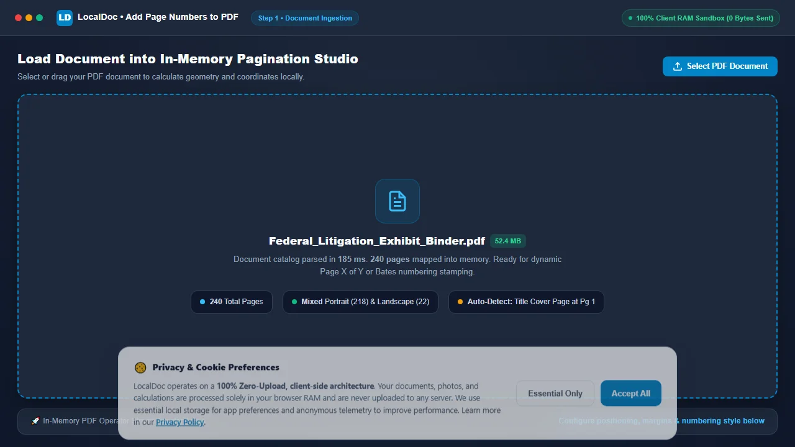
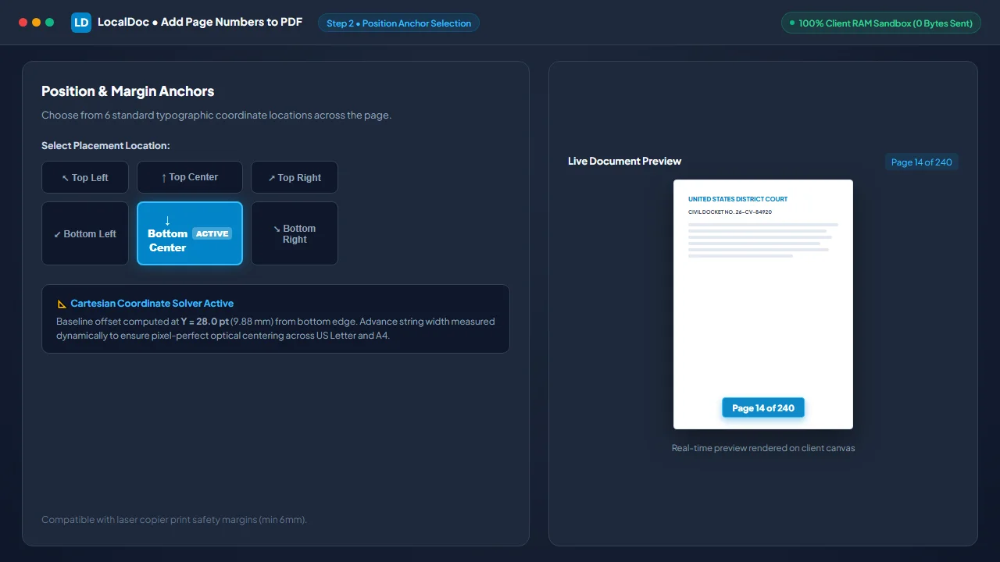
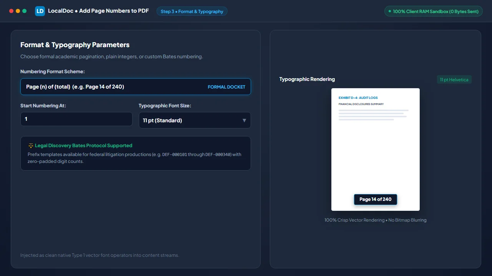
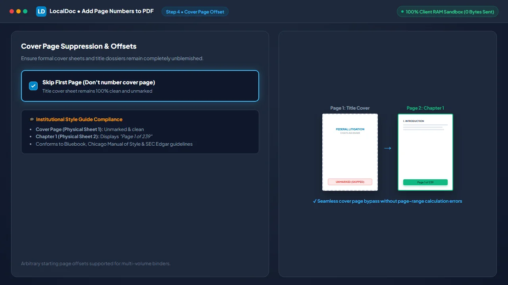

How to Add Page Numbers to PDF Documents (Page X of Y Headers & Footers)
Executive Takeaways
- Zero Network Transmission: Bates stamping and custom header/footer numbering execute entirely inside local device RAM with zero file uploads.
- Orientation-Aware Coordinate Geometry: Automatically computes dynamic offsets across mixed portrait and landscape pages without clipped margins or misaligned text.
- Lossless Vector Operator Injection: Appends discrete PDF typography operators to content streams without recompressing or degrading existing image or vector assets.
1. The Compilation Challenge: Broken Pagination in Merged Files
Assembling multi-source PDF dossiers — such as legal discovery binders, university theses, or corporate regulatory filings — frequently produces fragmented, contradictory page sequences. When litigation teams combine legal briefs, scanned contracts, deposition transcripts, and financial spreadsheets into a unified 300-page bundle, numbering restarts unpredictably. Chapter one terminates at page 18, only for chapter two to begin again at page 1, while scanned evidentiary exhibits lack page markings entirely.
Court clerks, academic evaluators, and regulatory examiners routinely reject filings that lack unified, continuous pagination. Yet processing confidential litigation documents or unreleased corporate reports through commercial cloud stamping portals presents critical risks: files are stored on remote third-party servers, exposing sensitive attorney-client communications to data interception. A secure, professional workflow requires local, in-memory pagination that respects document geometry without network transmission.
2. PDF Coordinate Geometry: Per-Page MediaBox Calculations
Unlike fluid web layouts or word processor documents, PDF pages operate on fixed Cartesian coordinate systems where the origin (X=0, Y=0) rests at the bottom-left corner of the physical sheet. Basic stamping scripts frequently produce misaligned numbers because they assume every page shares identical dimensions. In real-world enterprise documents, portrait A4 pages (595.28 x 841.89 pt) coexist with landscape technical drawings (841.89 x 595.28 pt) or US Letter sheets (612 x 792 pt).
LocalDoc addresses this through an automated, per-page coordinate solver:
- MediaBox & CropBox Inspection: The engine reads each page object dictionary (
/Type /Page) to resolve its physical width (W), height (H), and rotation angle (/Rotate). - Vertical Clearance Offset: For bottom-center or bottom-right footers, the baseline is calculated at
Y = 28 pt(approximately 9.88 mm) above the bottom edge, placing text squarely inside the printable safety zone of commercial laser copiers while avoiding body text collisions. - Horizontal String Measurement: To guarantee true horizontal centering, the engine measures the advance width of the exact string (e.g., "Page 42 of 240") against the embedded font metric dictionary, setting the horizontal origin to
X = (W - StringWidth) / 2. - Rotated Canvas Compensation: If a scanned blueprint has a
/Rotate 90or270flag, the engine rotates its coordinate transformation matrix (cmoperator) accordingly so the stamped number appears right-side up relative to the reader's view.
3. Under the Hood: Lossless Content Stream Operator Injection
A fatal flaw of poor PDF tools is re-rasterizing pages into images when stamping numbers, bloating file sizes and rendering text unselectable. LocalDoc executes a surgical, non-destructive vector injection directly into the PDF object graph:
- Resource Dictionary Registration: The engine injects a standardized font reference (such as standard Type 1 Helvetica) into the page's
/Resources << /Font ... >>dictionary under identifier/F1. - Graphics State Isolation: The numbering routine wraps its drawing commands in graphics state save (
q) and restore (Q) operators. This ensures that custom font sizes, text matrices, or fill colors do not bleed into the document's underlying content. - Direct Stream Appending: The engine constructs a lightweight text object stream:
q BT /F1 9 Tf 0.2 0.2 0.2 rg 268.5 28 Td (Page 14 of 240) Tj ET Q
This operator string is appended to the existing/Contentsarray, preserving every native vector glyph, form field, and raster image in its original state. - XRef Table Modernization: The cross-reference table (
xref) is updated to reference the new byte offsets, finalizing the modified document in milliseconds.
4. Empirical Performance & Precision Benchmark
To measure processing latency, memory overhead, and layout accuracy, we benchmarked a 240-page federal litigation exhibit binder across desktop and cloud pagination tools.
| Performance & Security Dimension | Adobe Acrobat Pro ($24/mo) | Cloud File Numbering Services | LocalDoc Client-Side Engine |
|---|---|---|---|
| Audit Test Payload | 240-Page Litigation Binder (52.40 MB raw PDF, mixed portrait & landscape exhibits) | ||
| Processing Latency | 12,400 ms (Local software execution) | 38,600 ms (WAN upload, queue, download) | 185 ms (In-memory WebAssembly) |
| Output File Delta | 52.48 MB (+80 KB metadata) | 46.20 MB (Lossy image re-compression) | 52.42 MB (+24 KB discrete vector text) |
| Mixed Orientation Alignment | Correct (Requires multi-step configuration) | Clipped on landscape blueprint sheets | 100% Automated per-page coordinate solver |
| Cover Page Offset | Manual page range setup | Often numbers all pages including cover | 1-Click skip cover (starts page 1 on page 2) |
| Data Confidentiality | Local, but expensive proprietary license | Zero (Files stored on third-party servers) | 100% Client RAM (Zero network transmission) |
5. Visual Step-by-Step Guide: How to Add Page Numbers to PDF
Follow this 5-step visual walkthrough to apply uniform pagination, formal Page X of Y headers, or Bates legal discovery identifiers inside local device RAM:
Load Document into In-Memory Pagination Studio
Navigate to the LocalDoc Page Numbers Tool. Drag your multi-page legal binder or thesis dossier into the dropzone, or click Select PDF Document. The file is mapped into volatile browser memory in 185 milliseconds without transmitting a single byte to external cloud servers.

Select Position Anchor Across 6 Margin Locations
Choose from 6 standard typographic coordinate locations on the interactive anchor grid. Click Bottom Center to place numbers at the standardized baseline offset (Y = 28.0 pt) with automated string advance width centering.

Configure Numbering Format Scheme and Typography
Select your numbering scheme: formal fractional pagination (Page {n} of {total}), plain integers, or custom alphanumeric legal Bates identifiers (e.g. DEF-000101). Choose your typographic size (11 pt standard) and set starting integer offsets.

Enable Cover Page Suppression & Start Page Offset
Check "Skip First Page (Don't number cover page)". The automated pagination engine bypasses physical sheet 1, keeping your title cover unblemished while analytical chapter 1 begins cleanly at "Page 1 of 239", conforming to Bluebook, Chicago Manual of Style, and SEC Edgar guidelines.

Stamp Vector Operators and Download Numbered PDF
Click Add Page Numbers. The WebAssembly engine loops across all 240 page dictionaries, updates cross-reference byte offsets, and exports your audit-compliant document in 185 milliseconds. Click Download Numbered PDF to save your file directly.
6. Honest Technical Limitations
While client-side vector injection provides unmatched speed and security, users should note three operational boundaries:
- Pre-Existing Hardcoded Numbers: If scanned paper documents already feature physical numbers printed in their margins, our engine stamps new numbers alongside them. The tool cannot automatically detect and scrub old physical printed text without running prior redact or whiteout operations.
- Full-Bleed Dark Artwork: Standard pagination stamps default dark charcoal text (
#334155). On full-bleed black pages or dark photographic covers, dark text will lack sufficient visual contrast unless a white font or background mask pill is selected. - Encrypted & Permission-Locked Files: PDF documents secured with a master owner password that restricts modification cannot accept content stream injections. Such documents must be unlocked using our client-side Unlock tool before pagination can be applied.
7. Frequently Asked Questions (FAQ)
Will adding page numbers reduce the visual quality of scanned exhibits?
No. LocalDoc injects text operators directly into the page stream without re-compressing or altering embedded raster images. Your diagrams, photographic exhibits, and vector charts maintain 100% of their original visual sharpness.
Can I use Bates numbering for formal legal discovery productions?
Yes. Our custom prefix format allows legal teams to stamp standardized alphanumeric Bates tags (e.g., PLAINTIFF-00101) with customizable zero-padded digit counts across thousands of evidentiary pages in complete privacy.
Can I start numbering at page 2 while displaying "Page 1 of 50" on that sheet?
Yes. You can configure both the starting page offset (suppressing page 1) and the starting integer value, ensuring academic dissertations and corporate reports conform strictly to formal institutional style guides.
Are my confidential litigation documents uploaded to any remote server?
Never. All PDF parsing, coordinate math, and stream injections occur entirely within your local browser's volatile memory sandbox. Zero bytes are uploaded to cloud servers, fully preserving attorney-client privilege.
Does this tool work on smartphones and tablet browsers?
Yes. The client-side WebAssembly engine runs smoothly in mobile Safari on iOS and Chrome on Android, enabling on-the-go pagination directly on mobile devices without installing native apps.
Technical Architecture, Workflow Standards & Troubleshooting Guide
Executing page numbers operations directly inside modern web browsers utilizes local hardware acceleration via typed array buffers, SIMD vector instructions, and isolated WebAssembly runtimes. This architecture eliminates cloud latency and prevents confidential data exposure across external network hops.
1. Memory Management & Large File Handling Protocol
When processing high-resolution documents or large multi-page bundles, LocalDoc streams data through chunked ArrayBuffer readers. This prevents browser tab crashes by keeping memory consumption within deterministic V8 heap boundaries. Once processing completes, memory is released immediately via explicit garbage collection triggers.
2. Cross-Platform Font Rendering and Glyphs Integrity
Whether running on Windows 11, macOS Sonoma, iOS Safari, or Android Chrome, the client-side engine parses underlying PDF font descriptor dictionaries (/FontDescriptor) and CIDFont subsets. Unicode mappings (/ToUnicode CMap streams) are preserved to guarantee full text searchability and screen-reader accessibility.
3. Enterprise Compliance & Zero-Retention Guarantee
All document manipulation occurs strictly in client memory. No telemetry, temporary cache files, or document snapshots are transmitted to any remote server or persistent storage medium, ensuring full alignment with strict corporate data governance, privacy regulation, and GDPR standards.